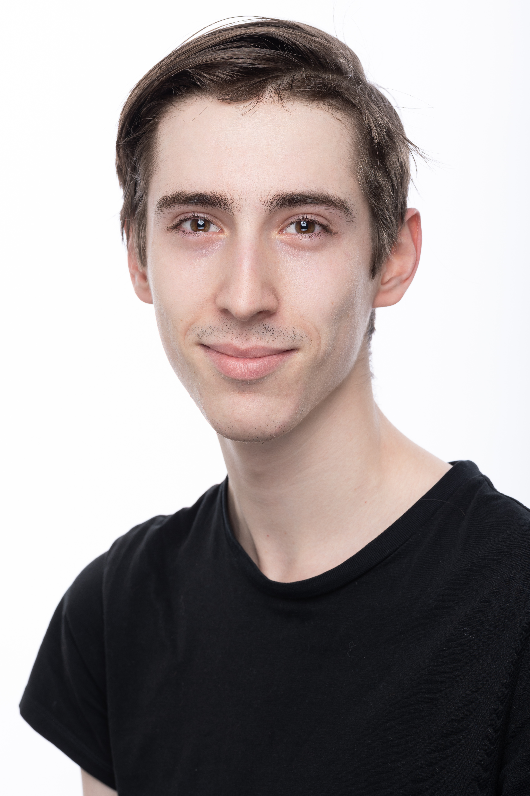
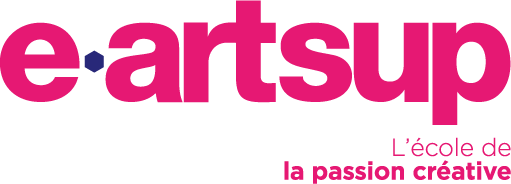
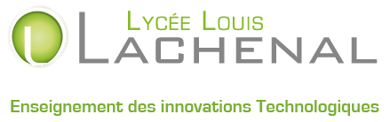
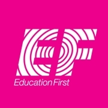

Je m'appelle Robin Kerbaol Tissot j'ai 21 ans, je suis en seconde année de bachelor en digital,
cycle web et multimédia a My Digital School, j'ai décider de me spécialiser en option design car je suis attiré par
la création/conception de visuel (identités visuelles. J'adore voyager dans le monde, découvrir de nouvelle culture
et nouveaux plats, la liberté quoi. J'aime le sport, le ski , le foot, le karaté. La musique, aussi, fait partis de ma vie .

Mes réalisations
>
.png)
Solidarité Moyen-Orient est un projet de groupe dans lequel nous devions créer une
association afin d'appliquer nos connaissance, dans ce projet je me suis occupé de
la partie création de post pour nos réseaux sociaux (stories, post)… Ainsi que la
conception d'une maquette pour notre site intenet.
Le combat d'Elena est un projet réaliser en équipe, notre objectif était d'augmenter la
visibilité de l'association ainsi que de concevoir un site internet, pour aider les
personnes dont les enfants souffre de la même maladie. J e me suis occupé de la
partie conception de Design et de post afin de donner une identité visuelle.
.png)

Durant mon stage, j'ai créé et pu participer a la création de nombreux designs pour professionnel et particulier. Création de logo,
mock-up, magazine, jeu de carte, carte de visite, plaquette d'inauguration. Conception
de post et de story pour les réseaux de l'agence ainsi que de société, et des retouches
vidéo.
Etudes
Après avoir validé ma première année en bachelor cycle web et multimédia, me voici
actuellement en 2eme année de Bachelor digital. Pour cette seconde année, j'ai décidé
de m'orienter dans le design. Durant cette première anéée, j'ai participé et créé
plusieurs projet. (ci-dessus)

Une année a E-artsup en formation Web design et créative coding, j'ai crée différent
type de jeu vidéo a l'aide unity, unreal engin. Participation a une Game jam avec ma
classe. Création d'un point and click pour projet autour du thême one piece.
Trois année au lycée Lachenal dans laquelle, j’ai fais un Baccalauréat Sciences et
Technologies de l’Industrie et du Développement Durable (STI2D) avec la spécialisation
système d’information numérique (SIN). Création d'un radar pédagogique pour projet final
de Terminal.


Je suis partie avec EF Annecy, sur le campus de EF London pendant 8 mois. Pendant mon
séjour linguistique j'ai pu améliorer mon anglais (orthographe, vocabulaire, conjugaison)
ainsi que la prononciation et la compréhension. Grace a ce voyage j'ai gagné en maturité
et en autonomie.
Mes compétences
Suite Adobe
Mes qualités